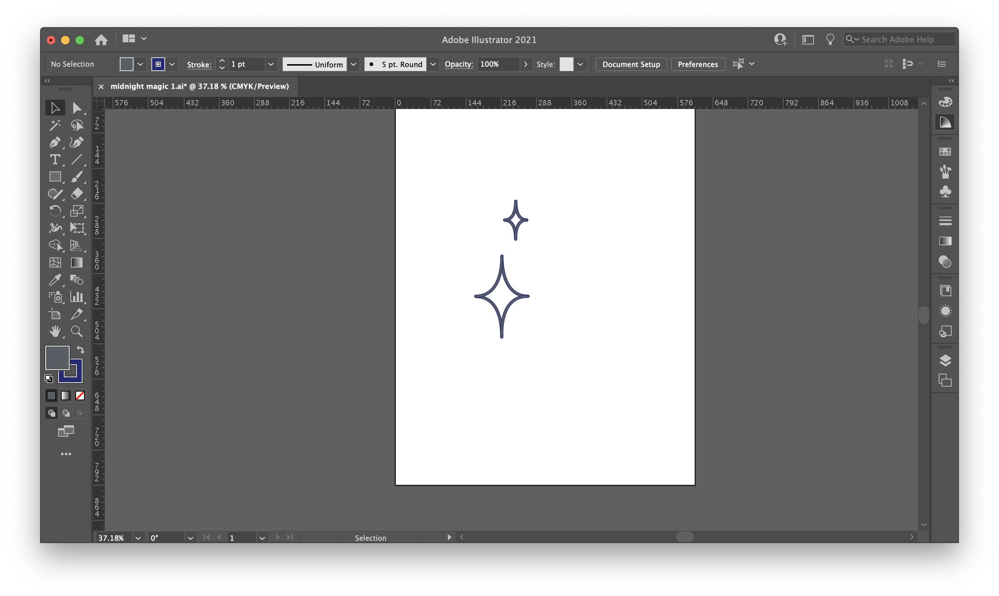
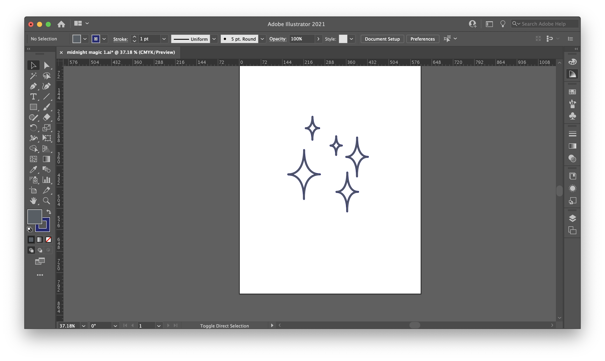
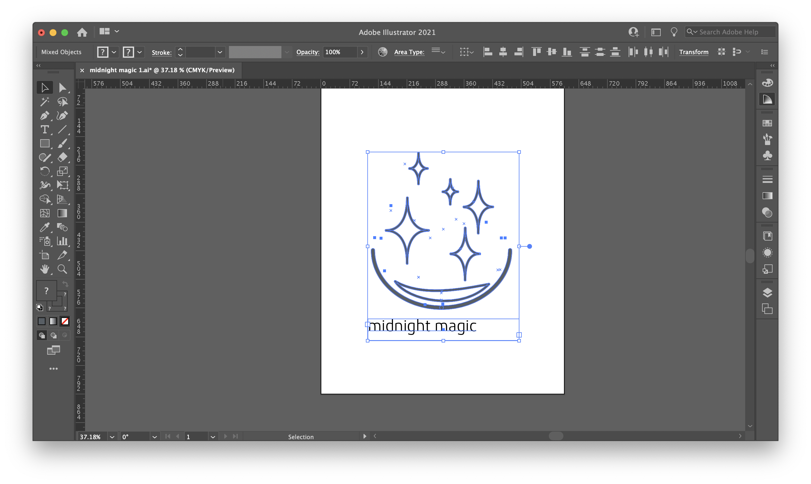
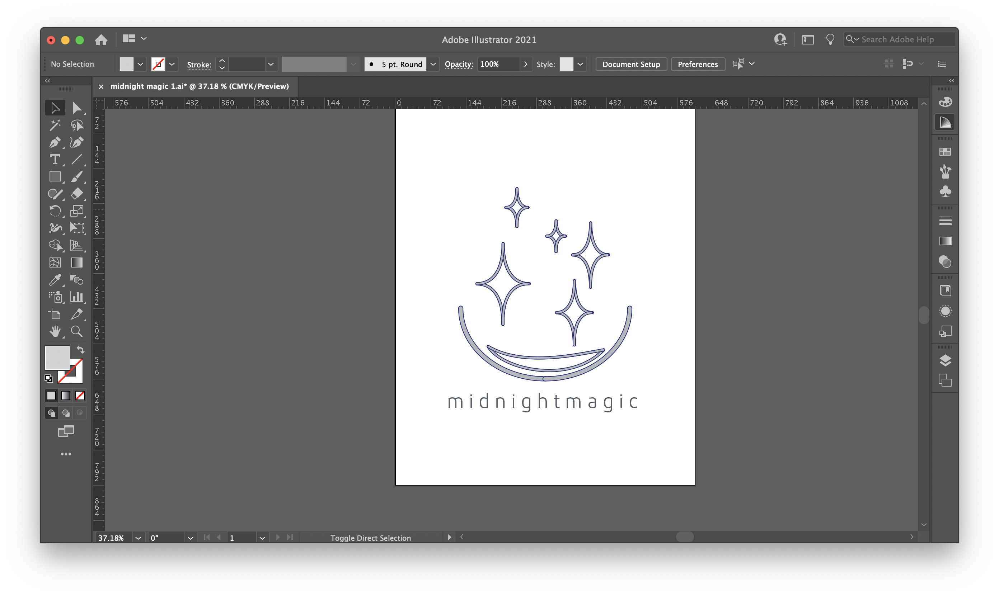
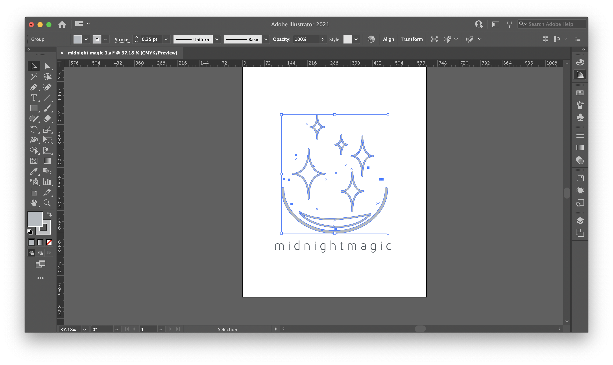
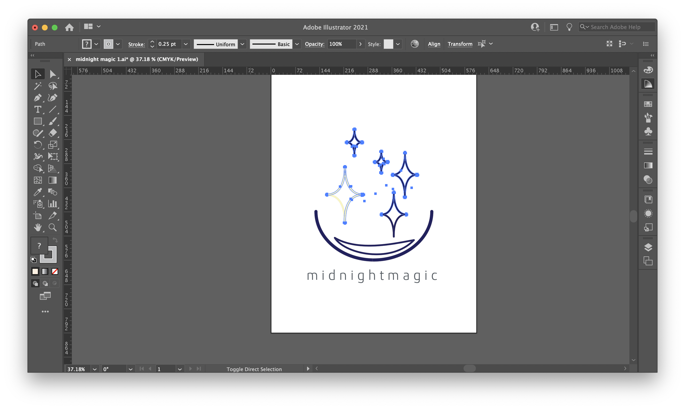
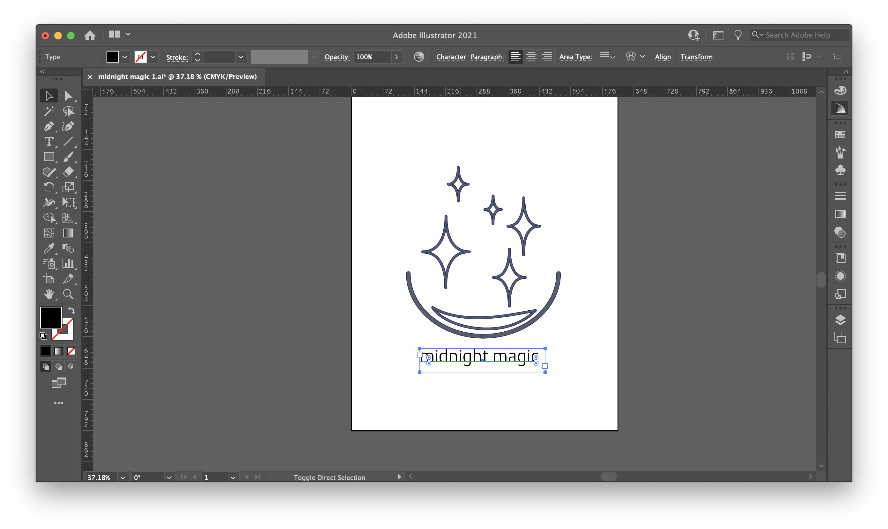
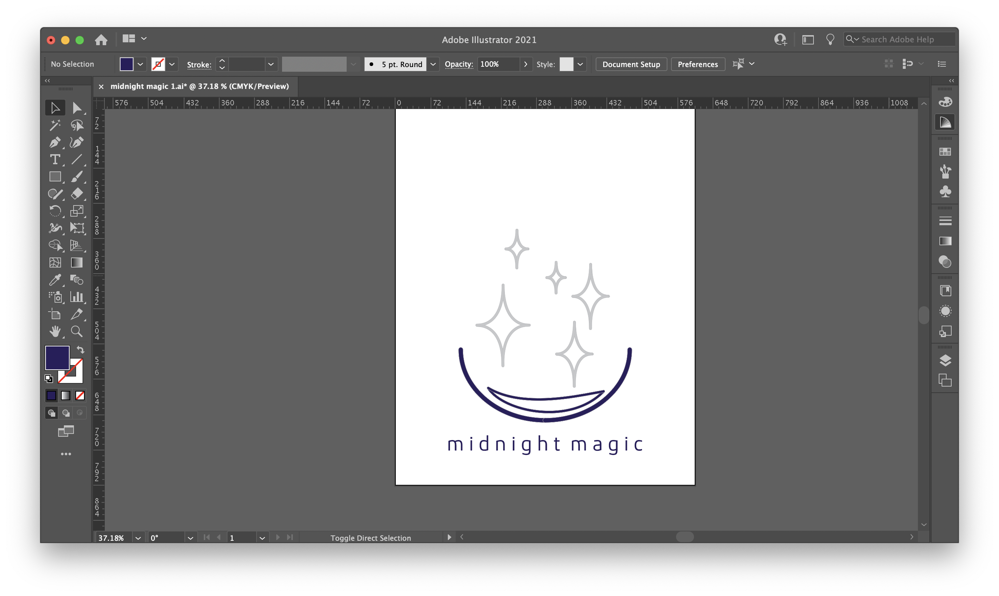

Digital Embroidery
My theme for my company was magic! I wanted to create a magical and simple line logo for my brand.
Following alone with the videos, I sketched up some line designs based on my Magic theme!

Now it was time to start working on my design in Adobe Illustrator
I decided to go with one of my lower sketches for the design, so I started with a lot of four sided star shapes, made with the arc tool.
Then, I added my brand name. I decided to go with Midnight Magic, to match my magic theme and the stars I was drawing. I downloaded a modern font called "Kuro" to use.
Now I spent a long time fiddling around with color, alignment, and placement for my design. I considered the lower arc that almost makes a bowl holding the sparkles to be my simple framing element, and kept the design clean by leaving the brand name with no other framing lines around it. I couldn't decide how I wanted my two colors to be distributed. I knew I wanted either a gold/silver and a navy blue.
    I ended up choosing to go with navy blue for the text and the framing elements, and silver for the stars. Since the theme was magic, I wanted the text to be simple and modern, to juxtapose the sweetness of the magic theme. I could've gone in the opposite direction and chosen big, swirly, letters, but decided that the clean font overall fit the line design better. The colors were inspired by the brand name - Midnight Magic - with the navy of the framing elements and the text representing the night sky at mignight, and the silver starts representing the stars. Since this was a line design challenge, I overall wanted to keep everything very simple. I'm someone who can often have things that are a bit too messy and crowded, and I knew that this assignment was not the place for that kind of style. It called for a more minimalistic touch. Below is my final design.

So, here I did goof a little. When I scheduled my time to come in for the embroidery machine, I was working really hard to get it all done in the hour long time slot. Due to this, I forgot to take pictures of my work in Premier+, as well as while the embroidery machine was actually running. But, I will do my best to document my process with words.
In Premier+ I first had a bit of trouble importing my design! Thankfully, Giana was around to remind me to use the quick import. Though I only used two colors in my design, Premier+ detected about 6. I left them as is, and sent the file over to the digital embroidery machine. I set the embroidery machine up for embroidering - made sure the right foot was on and switched in the arm that connects to embroidery hoop. I had my fabric set with its stablizer in the hoop, and I attached it in. When I opened up the design, I clicked to the color that I wanted to start with, which was the silver for the stars. I'd already loaded in the thread and the bobin for that color, so it's where I wanted to start. I had to skip over a few of the different colors that Premier+ detected in order to start with silver. The stars took about 3 minutes to embroider. Then, I actually scrolled back UP to where the navy that I needed was, switched out the bobbin and the thread, then started on the navy. The navy took longer because the machine also had to embroider each indivudal letter of the brand name. The navy took about 5 minutes. The design came out really well, although it wasn't perfectly centered on the fabric due to how I placed it in the hoop. I don't mind it that much, but if I was trying to make a gift or a product, that would definitely be something to fix. Before I was able to get onto Premier+ I prepped all my fabric for the drawstring bag. I was able to quickly sew the hem of the two chanel pieces, but that was all I had time left to do before someone else was scheduled on the machine. I'm returning to finish it monday evening on one of the normal sewing machines in the lab. I stayed in the fab lab a bit longer, and pinned together my linings, chanels, and front pieces, so they would be all ready to go for the final sew!
I went in to get trained on the sewing machine with John, and finish my project, and boy oh boy did we have a fun time. We made it all the way to the end of sewing together the pieces before realized that I'd misunderstood the instructions on the website and pinned the material together wrong. I was left with a very nice pillow, with a backwards design logo. So, we took it apart, and figured out where it went wrong. After pinning the channel pieces correctly this time, we went back to sewing. But, soon, we encounted a problem. The machine kept stalling, and making a very grumpy noise. After fixing the bobbing numerous times, and short runs of the machine before it groaned and froze again, John decided we should switch out the machine. I concurred. With the new machine, we were finally off and running. I felt a little bad, I'd told John this would be quick and I that just had to sew it up. Oh, how naïve I was. The machine truly gave both John and I a run for our money. We almost resorted to stealing the embroidery machine. After all our efforts, I did end up with a nice tote bag! I was able to sew it up, and pull the cord through the channels!


I really enjoyed this project! I wish the sewing part had gone a little smoother, but c'est la vie! At least the bag looks nice!
Thanks for reading!